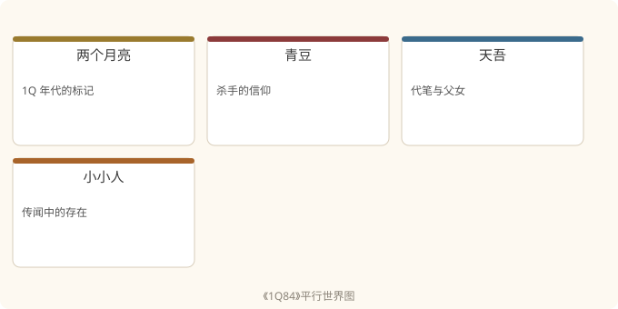

1Q84
一、基本信息
| 作者 | 村上春树 |
|---|---|
| 成书/出版 | 2009—2010年出版（作者页 B169 口径：1Q84 (2009–10)） Haruki Murakami — Encyclopaedia Britannica（百科全书） |
| 国别/地区 | 日本 |
| 时代 | 现当代 · 21世纪 |
| 体裁 | 长篇小说 |
| 语言 | 日语 |

《1Q84》平行世界图（主题·结构图）
二、创作背景
作者页（B169）：村上 major_works 载'1Q84 (2009–10)'（B169 作者页定位，详见 nuoweide 条核对）。
'1Q84'——'1Q 年代'：与现实平行的另一个1984年（通说待核）。
三、内容脉络
青豆（健身教练/杀手）与天吾（代笔作家）双线——'小小人'与两个月亮（通说待核）。
四、主要人物表
| 人物 | 身份 | 说明 |
|---|---|---|
| 青豆 | 教练 | 双线之一（通说待核） |
| 天吾 | 代笔作家 | 双线之二（通说待核） |
五、主题与艺术特点
- 平行世界的1984（通说）。
- 邪教与暴力（通说待核）。
- 村上晚期集大成（通说）。
六、影响与评论
- 作者页：村上晚期代表作（B169 作者页口径）。
Haruki Murakami — Encyclopaedia Britannica（百科全书） - 村上国际声誉的又一高峰（通说待核）。
Haruki Murakami — Encyclopaedia Britannica（百科全书）
七、阅读建议
难点
- 三卷体量。
- 平行世界设定。
- 《1Q84》（南海出版公司，通说待核）。
村上入门后进阶之作。
八、待核实
- 三卷出版日期核对。
- 青豆/天吾/牛河人名核对。
- '小小人'设定待核。